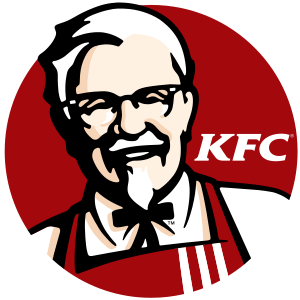

KFC Indonesia
Col. Sanders mulai menjual ayam gorengnya pada tahun 1939 di restoran miliknya pada tepi jalan di Corbin, Kentucky yang selanjutnya pindah ke sebuah motel. Ia menutup usahanya pada akhir 1940-an sewaktu jalan tol Interstate melalui kotanya. Pada awal 1950-an, ia mulai berkeliling Amerika Serikat dan bertemu dengan Pete Harman di Salt Lake City, Utah, dan pada tahun 1952 bersama-sama mendirikan restoran Kentucky Fried Chicken yang pertama di dunia.
Di Indonesia, pemegang hak waralaba tunggal KFC adalah PT Fast Food Indonesia, Tbk (IDX: FAST) yang didirikan oleh Kelompok Usaha Gelael pada tahun 1978, dan terdaftar sebagai perusahaan publik sejak tahun 1994. Restoran KFC pertama di Indonesia dibuka pada bulan Oktober 1979 di Jalan Melawai, Jakarta.
Tentang KFC
KFC (dulu dikenal dengan nama Kentucky Fried Chicken) adalah suatu merek dagang waralaba dari Yum! Brands, Inc., yang bermarkas di Louisville, Kentucky, Amerika Serikat. Didirikan oleh Col. Harland Sanders, KFC dikenal terutama karena ayam gorengnya, yang biasa disajikan dalam "timba" (bucket) dari kertas karton.
Hubungi Kami
14022
Social Media